O SuperstarAnalyser é um mini projeto criado em 48h para o 2° Hackfest Analytics. Com ele, é possível visualizar o impacto do programa Superstar na carreira e na popularidade dos artistas participantes, através de gráficos gerados a partir de dados coletados no twitter e de charts do Google Trends.
Escolha um participante
Selecione um dos finalistas da primeira temporada do programa.
Analise sua carreira
Analise a carreira do artista antes, durante e depois do programa.
Artistas
Selecione um dos finalistas da primeira temporada do Superstar
Malta
Banda Vencedora
Jamz
2° Lugar
Luan Estilizado
3° Lugar
Suricato
4° Lugar
Gráficos Comparativos
Google Trends
Análise Temporal de Popularidade
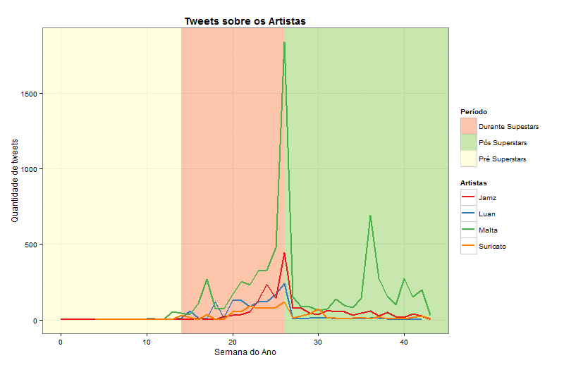
Anteriormente ao programa o gráfico nos mostra que nenhum dos quatro finalistas parecem ter popularidades diferentes antes do programa. Porém bem próximo ao programa já se nota um aumento na popularidade da banda malta. Porém se vê que logo no início a banda suricato e Luan Estilizado já se igualam. A partir daí já se nota que a banda Malta dispara na frente das concorrentes, enquanto Luan segue em segundo. Apenas nos ultimos 25% do programa é que a banda Jamz passa.
Após o fim do programa todas as bandar tem uma queda, e a banda Malta tem um segundo pico apartir da 35% semana, que coincide com o lançamento do album deles.
É interessante notar também que a popularidade da banda no dia da final reflete a colocação final no programa.
Análise de Sentimentos
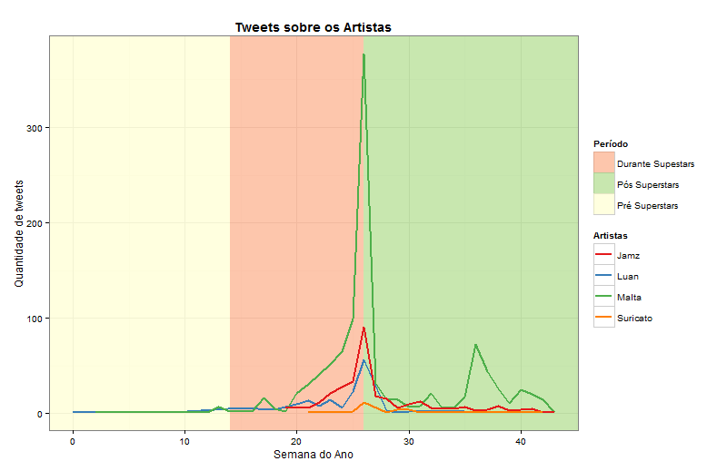
Ao se comparar o gráfico de análise de sentimento, ele mostra formatos muito parecidos com o gráfico geral. Os picos de cada banda se encontram conincidem muito com os picos dos tweets gerais, incluindo os picos após o programa.
Bar Plots
Antes do Superstar
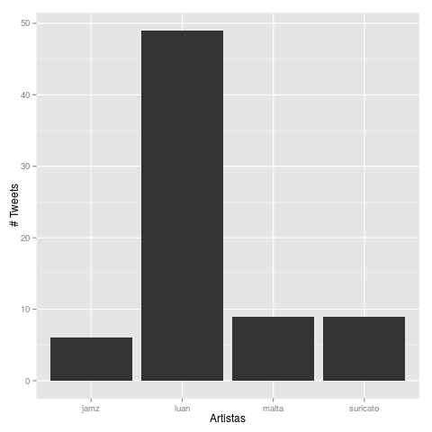
Durante o Superstar
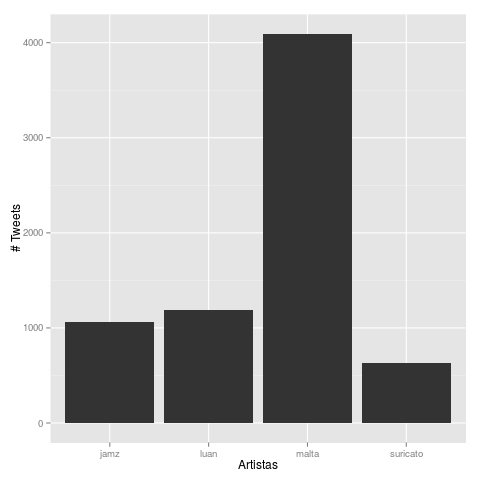
Depois do Superstar
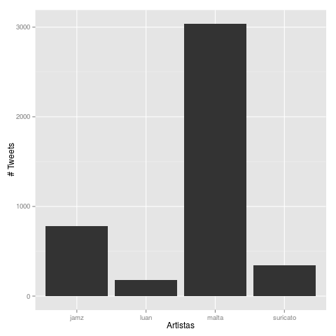
Equipe
Equipe participante do 2° Hackfest Analytics
Carol Cabral
Desenvolvedora
Leandro Balby
Desenvolvedor
Matheus Sampaio
Desenvolvedor
Igleson Freire
Desenvolvedor
Malta
Banda Vencedora
A Malta é uma banda de pop rock que conquistou o público brasileiro. O grupo, que aposta em canções carregadas de emoção, foi o grande vencedor do reality show SuperStar, exibido pela Rede Globo. Formada por Bruno Boncini (vocal), Thor Moares (guitarra), Diego Lopes (baixo) e Adriano Daga (bateria), os quatro rapazes de São Paulo já se dedicam à música há alguns anos, mesmo que tenham formado a Malta só em 2013.
Em suas participações no programa SuperStar, Bruno Boncini definiu o estilo da Malta de fazer música como “bruto romântico”, já que todas as letras falam muito de amor e relacionamentos. No reality show, a banda foi apadrinhada por Dinho Ouro Preto e surpreendeu a todos, sobretudo na estreia com a música “Memórias”, inspirada no single “Come Wake Me Up”.
Após a primeira apresentação na TV, o vocalista Bruno Boncini declarou: “A gente pode dizer que essa foi a primeira vez que fizemos um show juntos. Estávamos em estúdio, gravando, porque pretendemos ser uma banda de música autorais”. O vocalista ainda fez questão de comemorar o bom resultado na votação popular, que superou a marca de 80% de aprovação: “Para nós, é uma alegria muito grande ter sido aprovado com uma música nossa. Foi tudo muito rápido, mas a gente meteu a cara”.
Sempre no topo das bandas com melhores resultados no SuperStar, a Malta não perdeu o primeiro lugar e ainda apresentou outras grandes composições próprias, como “Nova História” e “Diz Pra Mim”. O quarteto paulista iniciou em agosto de 2014 uma grande excursão pelo país.
Word Cloud
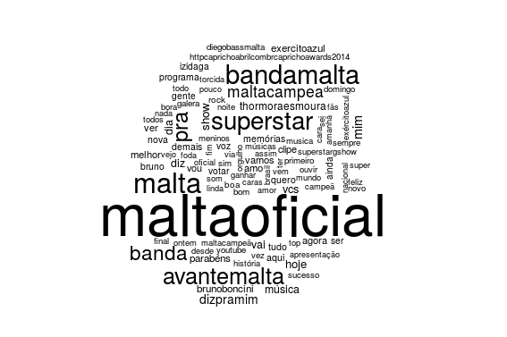
Análise Temporal de Popularidade
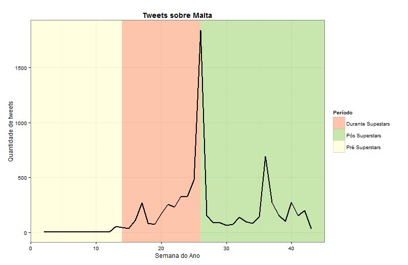
Esta banda não era conhecida antes do programa, porém logo antes do programa eles tem um aumento, talvez por eles já saberem que vão entrar no programa. No primeiro um quarto do programa eles conseguem aumentar bastante, porém logo após isso eles sofrem uma queda durante duas semanas, mas após isso entram em uma subida constante até a final.
Após o programa eles tem uma queda, porém se mantém mais populares que do que anteriormente ao programa e tem um segundo pico de popularidade que coincide com o lançamento do seu álbum.
Google Trends
Análise de Sentimentos
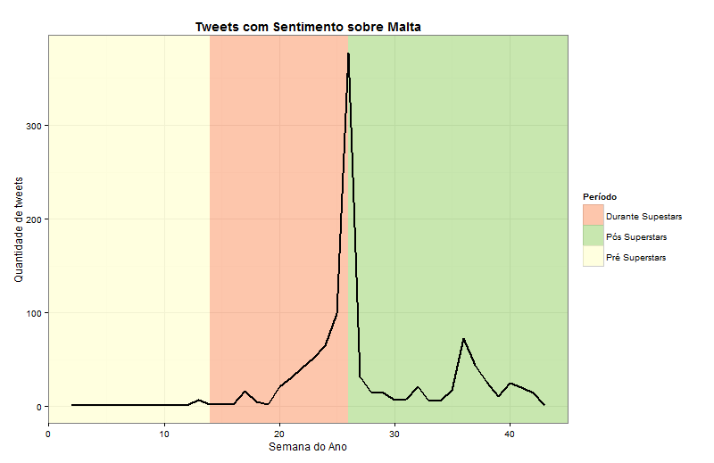
Nota-se que até um quarto do programa não existe quase nenhum tweet muito positivo sobre o malta até o primeiro um quarto do programa, porém após isso há uma alta muito rápida até a final.
Após o programa há uma queda e mais uma vez um novo pico no lançamento do CD deles.
Jamz
2° Lugar
Word Cloud
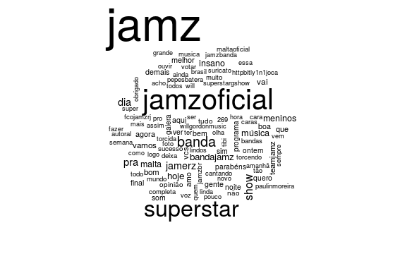
Análise Temporal de Popularidade
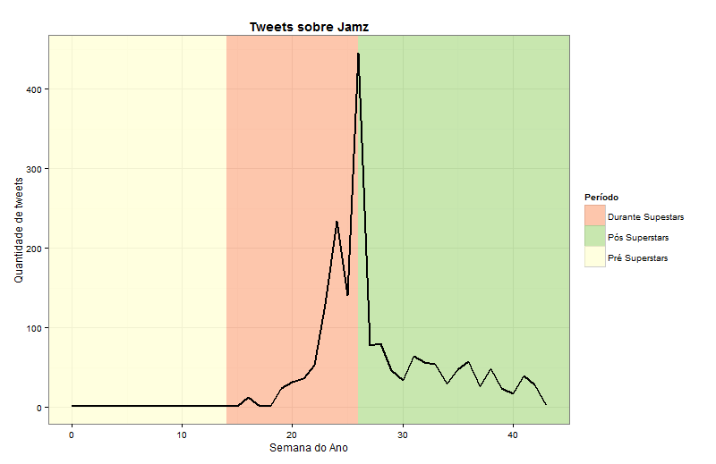
Nota-se a partir do gráfico que a banda é praticamente desconhecida anteriormente ao programa e que o início do programa não foi dos melhores em relação a sua popularidade, porém após o meio do programa eles entraram em um subida, com uma única semana de queda, ´porém logo se recuperaram.
Após o programa eles caem, mas se mantém melhores do que eram ao início do programa.
Google Trends
Análise de Sentimentos
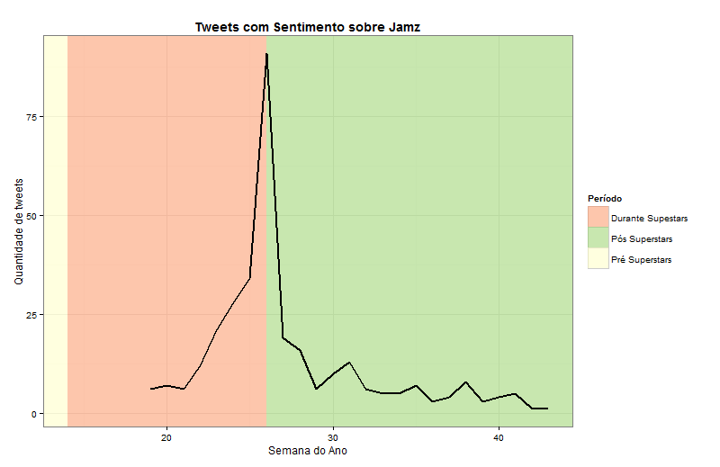
Até antes do programa se nota que não haviam tweets positivos sobre a banda, aumentando até a semana da final. Após isso esses tweets novamente tem uma queda, assim como acontece nos tweets gerais.
Luan Estilizado
3° Lugar
Luan e Forró Estilizado é um grupo de forró da Paraíba que participou do programa Superstar, da Globo. Em sua primeira apresentação, o grupo foi salvo por um voto do jurado Fábio Jr e se classificou para as fases seguintes. A partir daí, Luan e Forró Estilizado ganharam mais e mais fãs com seu repertório super elogiado. Segundo a própria banda: "Acho que o Brasil está entendendo a mensagem que a gente quer passar, que é trazer o forró do coração".
O grupo arriscou também algumas músicas autorais, como a "Solteiro na Sexta", que agradou ao público e aos jurados do programa. No Top 7, o grupo fez um "forrock" ao misturar forró com Led Zeppelin.
Word Cloud
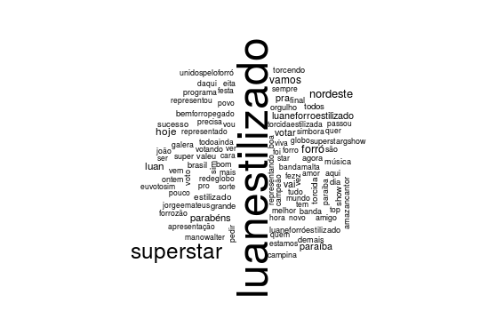
Análise Temporal de Popularidade
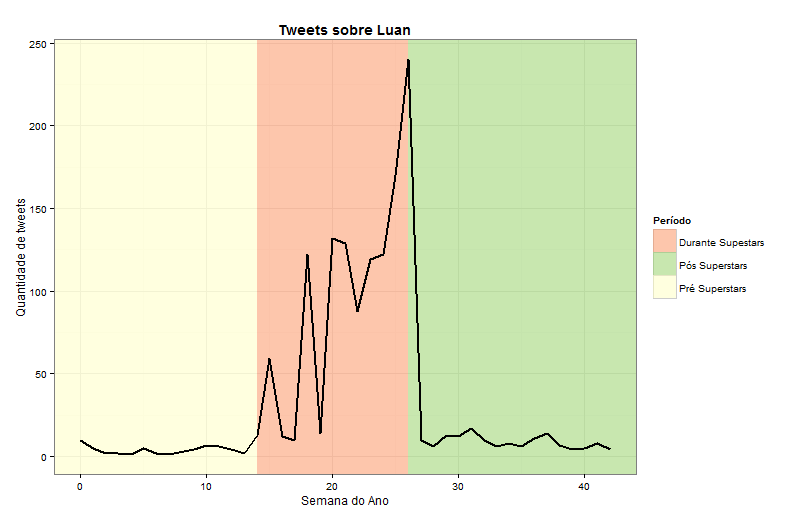
O gráfico nos mostra que Luan era pouco popular antes do programa. Durante o programa a sua popularidade se mantém muito inconstante, não conseguindo manter nem um aumento ou constância.
Após o programa a sua popularidade cai e se torna pouco maior do que o que era antes do programa.
Google Trends
Análise de Sentimentos
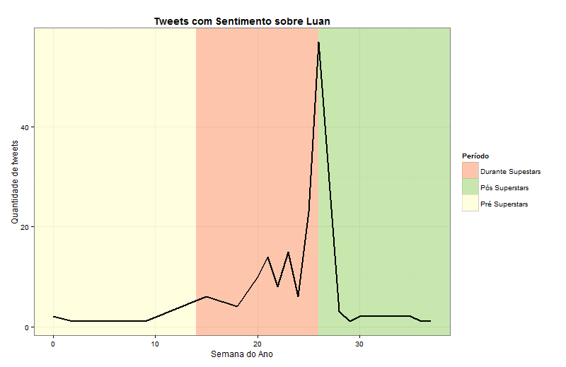
Nota-se que existem tweets positivos sobre Luan desde janeiro e que eles aumentam até metade do programa, depois ficando inconstantes até a final. Após isso, como todos, há uma queda.
Suricato
4° Lugar
Word Cloud
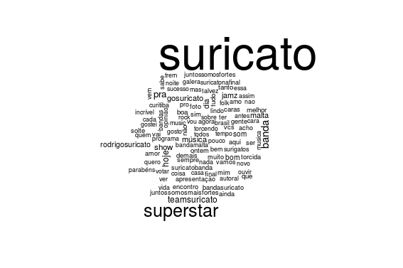
Análise Temporal de Popularidade
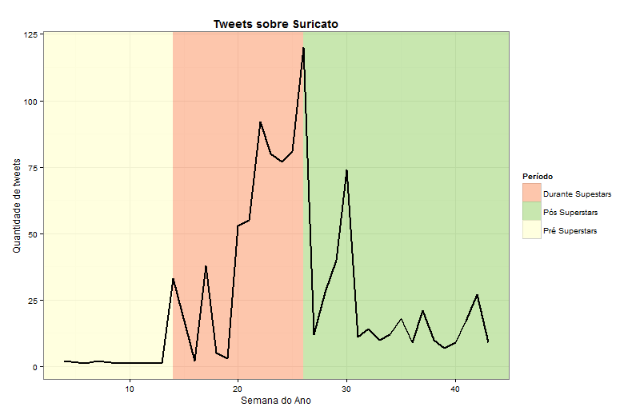
No início do programa a banda se mostra praticamente desconhecida, porém assim como a Malta anteriormente o programa a sua popularidade já começa a subir. Porém na primeira metade do programa a banda se mostra inconstante, sem conseguir manter um aumento. Na segunda metade eles passam um tempo subindo, porém tem um nova queda e demoram a conseguir aumentar novamente, conseguindo isso apenas muito próximo a final.
Após o programa eles tem uma queda e um novo pico, porém após isso eles caem mas ainda mantendo uma popularidade maior do que a anterior ao programa.
Google Trends
Análise de Sentimentos
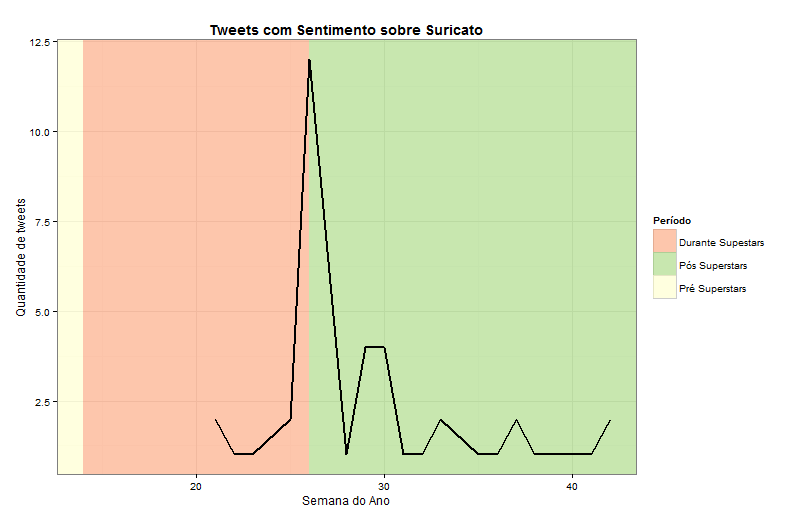
Até a metade do programa não se encontra nenhum tweet com alta positividade sobre a Suricato. Após isso eles enfrentam um pequeno vale, porém até a final eles sobem. Após o programa eles caem, porém rapidamente tem um novo pico e voltam a cair.